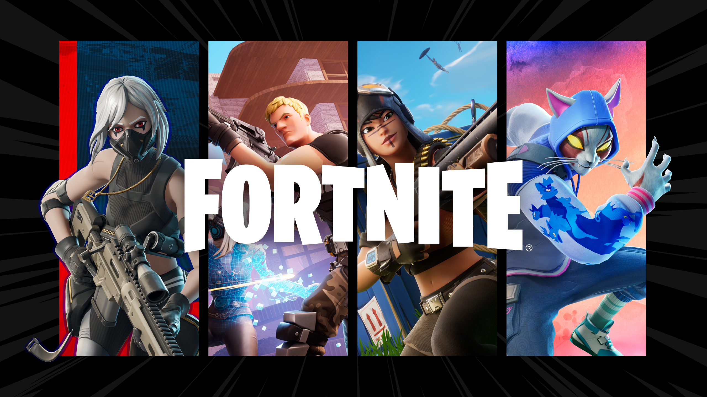
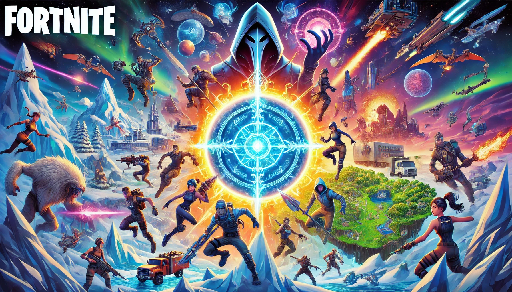
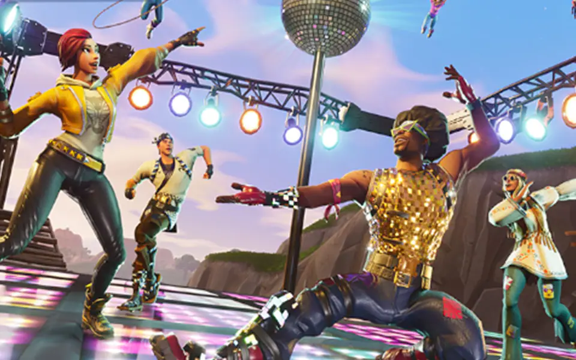
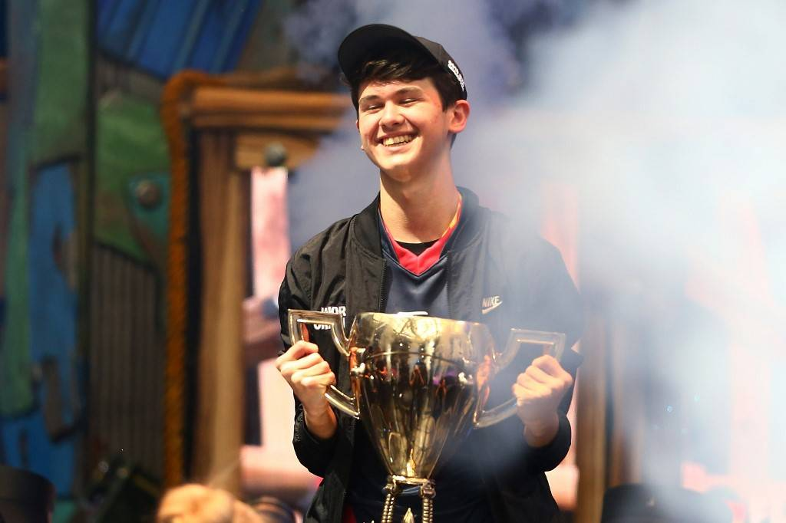

Fortnite es un videojuego en línea de desarrollo por Epic Games que combina acción, construcción y estrategia. Su modo más popular es Battle Royale, donde 100 jugadores compiten para ser el último en pie, explorando un mapa dinámico lleno de armas, recursos y eventos sorprendentes. También cuenta con otros modos como Cero Construcción, Salva el Mundo
Fortnite ocupa aproximadamente:
En los próximos años, Fortnite probablemente se transformará en una experiencia aún más inmersiva y emocionante. Con la constante evolución de la tecnología, podemos esperar ver una mejora significativa en los gráficos, tal vez con mundos más realistas o escenarios completamente virtuales gracias a la realidad aumentada (AR) y la realidad virtual (VR). esto podría permitir a los jugadores sentir que realmente están dentro del juego, interactuando de maneras más naturales. También es posible que Fortnite se expanda a nuevas plataformas y dispositivos. Imagina jugar con tus amigos en cualquier momento y en cualquier lugar, no solo desde una consola o PC, sino desde gafas de realidad aumentada, o incluso a través de dispositivos de neurotecnología que permiten controlar el juego solo con el pensamiento. La conectividad y la integración entre plataformas será clave, lo que permitirá una comunidad aún más unificada. Además, los eventos en vivo y las colaboraciones con marcas y franquicias de todo tipo seguirán siendo una parte esencial de la experiencia Fortnite. Desde conciertos hasta eventos deportivos y lanzamientos de películas, los desarrolladores seguirán creando nuevas formas de mantener a los jugadores involucrados. Las temporadas del juego podrían ser aún más dinámicas, con cambios masivos en el mapa y nuevos modos de juego que cambian el modo de jugar de manera constante. En cuanto a la jugabilidad, el estilo de juego competitivo de Fortnite seguramente continuará, pero con mejoras en la inteligencia artificial (IA) que podrían hacer que los bots sean más desafiantes y realistas. Quizás hasta veamos nuevas mecánicas de juego que hagan que cada partida sea más estratégica, con más opciones de personalización para que cada jugador pueda crear su propia experiencia única.
Fortnite se ha consolidado como uno de los mejores juegos de la historia gracias a su innovadora combinación de construcción, acción y estrategias dentro de un mundo vibrante en constante evolución. Su capacidad para reinventarse mediante temporadas temáticas, eventos colaborativos con grandes franquicias del entretenimiento y una experiencia multijugador envolvente ha cautivado a millones de jugadores alrededor del mundo.
Fortnite ganó el premio a Mejor Juego Multijugador en The Game Awards 2018
y ha sido nominado en diversas categorías a lo largo de los años, reconociendo su impacto cultural y técnico en la industria de los videojuegos. Su comunidad global y su capacidad para conectar a personas de todas las edades siguen siendo prueba de su legado sin precedentes.
Fortnite competitivo es una modalidad en la que jugadores y equipos se enfrentan para demostrar sus habilidades en torneos oficiales organizados por Epic Games. Este modo pone a prueba la precisión, construcción rápida, estrategias avanzadas y trabajo en equipo. Las competiciones incluyen modos en solitario, dúos y tríos, con partidas de alto nivel que pueden cambiar drásticamente en cuestión de segundos. Los mejores jugadores compiten por premios en efectivo y prestigio internacional.
El evento más importante en la historia del competitivo de Fortnite es la Fortnite World Cup, celebrada en 2019 en Nueva York. Fue un torneo masivo con millones de dólares en premios. El jugador estadounidense Kyle "Bugha" Giersdorf ganó el torneo en la categoría en solitario, llevándose a casa un premio de 3 millones de dólares. Su victoria se destacó por su consistencia, calma bajo presión y dominio estratégico en todas las partidas.
Algunos jugadores han dejado una marca indeleble en el competitivo de Fortnite debido a su estilo innovador y habilidades inigualables. Entre los nombres más destacados y que continúan compitiendo o influyendo en el juego están:
Aquí puedes ver todo el contenido, tienda, ganancias de jugadores y su historial. Presiona en la siguiente imagen para ir al sitio web